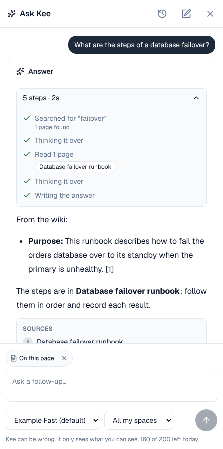

Ask Kee, in the top bar of every screen, opens a panel where you ask a question in your own words. Kee looks through the pages you can read, opens the ones that fit, and answers with numbered links to its sources.

1. Ask a question
- Open Ask Kee — From the top bar. On a phone it fills the screen.
- Choose where to look — This page only or This space when you opened it on a page or in a space, or All my spaces. When you are on a page, On this page shows that Kee knows which page you are reading; remove it to ask without it.
- Type your question and send it — Kee shows each step as it works: what it searched for, how many pages it found, and which pages it read.
- Read the answer — Each [1], [2] in the answer links to a source, listed under Sources. Open them to check what the page says.
Ask follow-up questions in the same conversation: Kee remembers what was said. New conversation (the pencil at the top) starts again.
- Copy the answer puts the answer on your clipboard.
- Open the editor appears when you may edit the page you are on. Kee answers questions; it doesn't change pages. To change a page, open the editor and use Writing with Kee.
- With more than one model, the picker under the question box chooses which one answers.
- Stop (or Esc) ends an answer at once; what was written so far stays in the conversation.
2. Help with the Wiki itself
Kee also answers questions about the Wiki, such as "How do I add a group to this space?" or "Where do I restore an old version?". It answers those from this documentation, not from your pages: the pages it used are linked under From the product docs, apart from your own pages under Sources, and open on the documentation site in a new tab. The documentation Kee reads is the one that came with your Wiki's version, so it works without internet access.
Kee knows which screen you opened it on (the chip above the question box names it), so the answer can start from where you are.
- When the documentation has the steps for what you asked, they are listed under the answer, numbered, exactly as written here.
- Show me walks you through them: the panel steps aside, a ring marks the control of the current step and a small box beside it says what to do. Do the step yourself (the walkthrough moves on when you select the marked control), or select Next. Back returns to the step before and the cross, or Stop showing under the answer, ends it at any time.
- Ask Kee in the top bar, or the speech bubble in the box, brings the panel and your conversation back while the walkthrough goes on.
- Kee only points. It never clicks, types or saves for you.
- The walkthrough stays with you from screen to screen. When a step's control isn't on the screen (it is on another screen, you may not use it, or the layout hides it on a phone), the box shows the step as text, with a link to the right screen where there is one.
- With a keyboard: the box takes focus when the walkthrough starts, Tab reaches its buttons, Go to the control moves focus to the marked control and Esc stops. A screen reader announces each step. With reduced motion set, the ring is still.
- Not every task has steps yet. Without them Kee still answers from the documentation and links the page.


3. Good to know
Some answers carry a note under Good to know: a long page was read in parts, the conversation is long and its earliest messages were left out, or Kee read as much as one answer may (or took as many steps as it may) and something may be missing. Ask a narrower question, or open the sources yourself.
4. What Kee can read
- Pages you can read, with your own access: never a page you can't open, a page under a lock you are not on, or a draft you couldn't see.
- Comments and labels on those pages, the page tree, earlier versions, and templates (templates only where you can edit pages).
- Nothing of a space whose admins turned Kee off.
- Not yet: blog posts, Q&A, attachments and files.
The full list is in What Kee can read.
Kee finds pages by their titles for now, not by the words inside them, and it matches whole words: a question about "certificates" may not find a page titled "Certificate rotation runbook". If Kee says it found nothing, ask again with words from the page's title, or ask on the page itself with This page only.
5. Earlier conversations
The clock at the top of the panel lists your earlier conversations, newest first, each with the date until which it is kept. Open one to read or continue it, or delete it. Only you see your conversations.

Conversations are kept for 30 days after their last message unless your administrator chose another period, then deleted. A conversation holds up to 200 messages; after that Kee asks you to start a new one.
6. Feedback
Under each answer, Good answer and Bad answer tell your administrators how Kee is doing. For a bad answer you can say what was wrong (wrong or made up, out of date, missed the point, too long, other) and add a note. Feedback stays in this Wiki: it is never sent to the model provider.
7. Limits
Each question is one request against your daily limit, however many pages Kee reads for it. The panel shows how many requests you have left today.